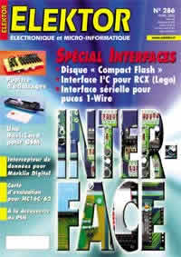

28/03/2002: Cours "Microcontrôleurs" (4) Compilateurs C pour 8051 - Elektor N°286 Avril 2002


Le numéro 286 d'Elektor ravira les passionnés de µC 8051 à travers deux articles: La 4ème partie du cours "Microcontrôleurs" consacré au compilateur C READS51 et "Electronique en ligne" qui présente les versions gratuites, shareware et de démonstration de compilateurs pour 8051.
Le cours "Micocontrôleurs" traite dans ce numéro du compilateur C gratuit de Rigel "READS51" (news 06/02/02) à usage non commercial et téléchargeable à l'adresse: http://www.rigelcorp.com/download.htm .Alors si vous voulez essayer le langage C n'hésitez plus d'autant que vous disposerez d'un compilateur C de grande qualité doté d'une interface utilisateur dont la prise en main est très rapide. Pour vous aider le cours vous donnera quelques bases de C et des exemples concrets tels que des commandes de lignes de port ou un diviseur de fréquence. Si vous souhaitez continuer il est probable qu'il vous faudra vous plonger dans un cours complet de C ANSI. Rassurez vous le cours Elektor et quelques bases de C suffiront pour programmer vos microcontrôleurs préférés. Souvenez vous que rien ne vaut un peu de pratique !
"Electronique en ligne" vous présente les bons filons pour trouver des compilateurs gratuits, shareware ou en démonstration pour la famille 8051. Si READS51 ou SDCC (http://sdcc.sourceforge.net) sont gratuits, certaines versions de démonstration sont parfaitement utilisables mais bien entendu limitées dans leur emploi à la taille mémoire de programme généralement, au nombre de lignes ou dans le temps. Mais ils permettent tout de même de s'initier et de découvrir le produit comme par exemple avec l'excellent compilateur C de Keil C51(limité à 1ko http://www.keil.com/demo) ou de la société francaise Raisonance (limité à 4Ko) http://www.raisonance.com/download/index.php. Article à lire sans hésitation!
Comment ne pas citer des articles de ce numéro tels que: Une BasicCard pour GSM, l'interface I2C pour module RCX de Lego, "Disque" compact-Flash pour PC, Carte d'évaluation pour µC MC16C/62 de Mitsubishi + compilateur C+ assembleur+moniteur et logiciel Flash pour 50€ !